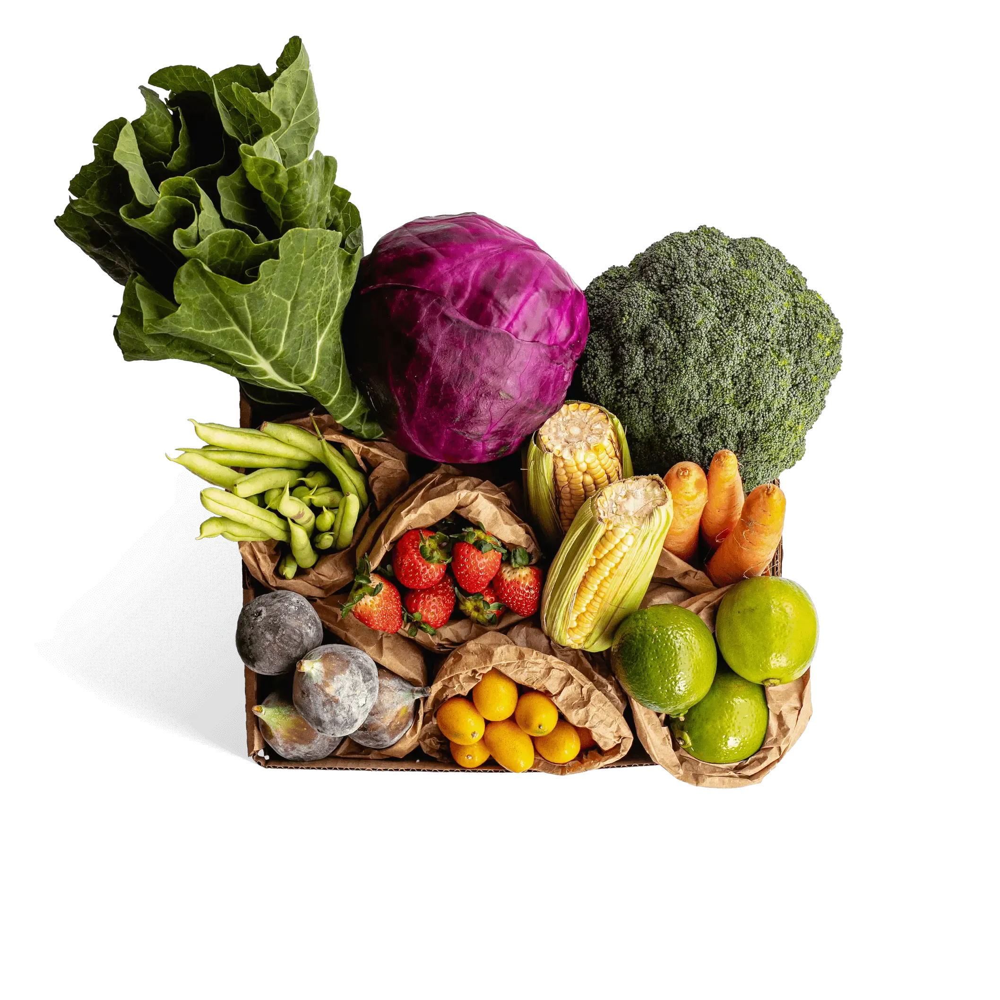

Bem-Vindo(a) a Agropop
Uma empresa responsável pela coleta e distribuição de alimentos doados de pequenos, médios e grandes produtores agrícolas
Nascemos em 2022 com um propósito, com uma missão: Evitar o desperdicio de alimentos, e entregar nas mesas das familias que mais necessitam

Combata o desperdício!
Através do resgate de alimentos orgânicos que são rejeitados pelo mercado tradicional, mesmo sendo perfeitos pra consumo.